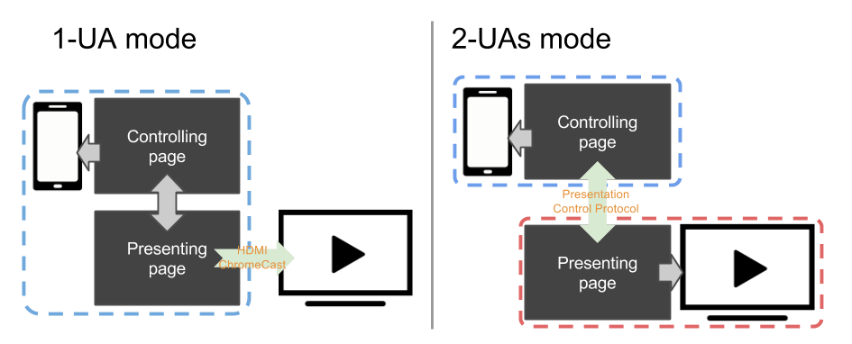

Presentation API
Secure context: This feature is available only in secure contexts (HTTPS), in some or all supporting browsers.
Experimental: This is an experimental technology
Check the Browser compatibility table carefully before using this in production.
The Presentation API lets a user agent (such as a Web browser) effectively display web content through large presentation devices such as projectors and network-connected televisions. Supported types of multimedia devices include both displays which are wired using HDMI, DVI, or the like, or wireless, using DLNA, Chromecast, AirPlay, or Miracast.

In general, a web page uses the Presentation Controller API to specify the web content to be rendered on presentation device and initiate the presentation session. With Presentation Receiver API, the presenting web content obtains the session status. With providing both the controller page and the receiver one with a messaged-based channel, a Web developer can implement the interaction between these two pages.
Depending on the connection mechanism provided by the presentation device, any controller- and receiver page can be rendered by the same user agent, or by separated user agents.
- For 1-UA mode devices, both pages are loaded by the same user agent. However, rendering result of the receiver page will be sent to the presentation device via supported remote rendering protocol.
- For 2-UAs mode device, the receiver page is loaded directly on the presentation device. Controlling user agent communicates with presentation device via supported presentation control protocol, to control the presentation session and to transmit the message between two pages.
Interfaces
Presentation-
In controlling browsing context, the
Presentationinterface provides a mechanism to override the browser default behavior of launching presentation to external screen. In receiving browsing context,Presentationinterface provides the access to the available presentation connections. PresentationRequest-
Initiates or reconnects to a presentation made by a controlling browsing context.
-
A PresentationAvailability object is associated with available presentation displays and represents the presentation display availability for a presentation request.
-
The
PresentationConnectionAvailableEventis fired on aPresentationRequestwhen a connection associated with the object is created. PresentationConnection-
Each presentation connection is represented by a PresentationConnection object.
PresentationConnectionCloseEvent-
A
PresentationConnectionCloseEventis fired when a presentation connection enters aclosedstate. PresentationReceiver-
The PresentationReceiver allows a receiving browsing context to access the controlling browsing contexts and communicate with them.
PresentationConnectionList-
PresentationConnectionListrepresents the collection of non-terminated presentation connections. It is also a monitor for the event of new available presentation connection.
Example
Example codes below highlight the usage of main features of the Presentation API: controller.html implements the controller and presentation.html implements the presentation. Both pages are served from the domain http://example.org (http://example.org/controller.html and http://example.org/presentation.html). These examples assume that the controlling page is managing one presentation at a time. Please refer to the comments in the code examples for further details.
Monitor availability of presentation displays
In controller.html:
<button id="presentBtn" style="display: none;">Present</button>
<script>
// The Present button is visible if at least one presentation display is available
const presentBtn = document.getElementById("presentBtn");
// It is also possible to use relative presentation URL e.g. "presentation.html"
const presUrls = [
"http://example.com/presentation.html",
"http://example.net/alternate.html",
];
// Show or hide present button depending on display availability
const handleAvailabilityChange = (available) => {
presentBtn.style.display = available ? "inline" : "none";
};
// Promise is resolved as soon as the presentation display availability is known.
const request = new PresentationRequest(presUrls);
request
.getAvailability()
.then((availability) => {
// availability.value may be kept up-to-date by the controlling UA as long
// as the availability object is alive. It is advised for the web developers
// to discard the object as soon as it's not needed.
handleAvailabilityChange(availability.value);
availability.onchange = () => {
handleAvailabilityChange(availability.value);
};
})
.catch(() => {
// Availability monitoring is not supported by the platform, so discovery of
// presentation displays will happen only after request.start() is called.
// Pretend the devices are available for simplicity; or, one could implement
// a third state for the button.
handleAvailabilityChange(true);
});
</script>
Starting a new presentation
In controller.html:
<script>
presentBtn.onclick = () => {
// Start new presentation.
request
.start()
// The connection to the presentation will be passed to setConnection on success.
.then(setConnection);
// Otherwise, the user canceled the selection dialog or no screens were found.
};
</script>
Reconnect to a presentation
In the controller.html file:
<button id="reconnectBtn" style="display: none;">Reconnect</button>
<script>
const reconnect = () => {
// read presId from localStorage if exists
const presId = localStorage["presId"];
// presId is mandatory when reconnecting to a presentation.
if (presId) {
request
.reconnect(presId)
// The new connection to the presentation will be passed to
// setConnection on success.
.then(setConnection);
// No connection found for presUrl and presId, or an error occurred.
}
};
// On navigation of the controller, reconnect automatically.
document.addEventListener("DOMContentLoaded", reconnect);
// Or allow manual reconnection.
reconnectBtn.onclick = reconnect;
</script>
Presentation initiation by the controlling UA
In the controller.html file:
<script>
navigator.presentation.defaultRequest = new PresentationRequest(presUrls);
navigator.presentation.defaultRequest.onconnectionavailable = (evt) => {
setConnection(evt.connection);
};
</script>
Setting presentation.defaultRequest allows the page to specify the PresentationRequest to use when the controlling UA initiates a presentation.
Monitor connection's state and exchange data
In controller.html:
<button id="disconnectBtn" style="display: none;">Disconnect</button>
<button id="stopBtn" style="display: none;">Stop</button>
<button id="reconnectBtn" style="display: none;">Reconnect</button>
<script>
let connection;
// The Disconnect and Stop buttons are visible if there is a connected presentation
const stopBtn = document.querySelector("#stopBtn");
const reconnectBtn = document.querySelector("#reconnectBtn");
const disconnectBtn = document.querySelector("#disconnectBtn");
stopBtn.onclick = () => {
connection?.terminate();
};
disconnectBtn.onclick = () => {
connection?.close();
};
function setConnection(newConnection) {
// Disconnect from existing presentation, if not attempting to reconnect
if (
connection &&
connection !== newConnection &&
connection.state !== "closed"
) {
connection.onclose = undefined;
connection.close();
}
// Set the new connection and save the presentation ID
connection = newConnection;
localStorage["presId"] = connection.id;
function showConnectedUI() {
// Allow the user to disconnect from or terminate the presentation
stopBtn.style.display = "inline";
disconnectBtn.style.display = "inline";
reconnectBtn.style.display = "none";
}
function showDisconnectedUI() {
disconnectBtn.style.display = "none";
stopBtn.style.display = "none";
reconnectBtn.style.display = localStorage["presId"] ? "inline" : "none";
}
// Monitor the connection state
connection.onconnect = () => {
showConnectedUI();
// Register message handler
connection.onmessage = (message) => {
console.log(`Received message: ${message.data}`);
};
// Send initial message to presentation page
connection.send("Say hello");
};
connection.onclose = () => {
connection = null;
showDisconnectedUI();
};
connection.onterminate = () => {
// Remove presId from localStorage if exists
delete localStorage["presId"];
connection = null;
showDisconnectedUI();
};
}
</script>
Monitor available connection(s) and say hello
In presentation.html:
const addConnection = (connection) => {
connection.onmessage = (message) => {
if (message.data === "Say hello") connection.send("hello");
};
};
navigator.presentation.receiver.connectionList.then((list) => {
list.connections.forEach((connection) => {
addConnection(connection);
});
list.onconnectionavailable = (evt) => {
addConnection(evt.connection);
};
});
Passing locale information with a message
In the controller.html file:
<script>
connection.send('{"string": "你好，世界!", "lang": "zh-CN"}');
connection.send('{"string": "こんにちは、世界!", "lang": "ja"}');
connection.send('{"string": "안녕하세요, 세계!", "lang": "ko"}');
connection.send('{"string": "Hello, world!", "lang": "en-US"}');
</script>
In the presentation.html file:
<script>
connection.onmessage = (message) => {
const messageObj = JSON.parse(message.data);
const spanElt = document.createElement("SPAN");
spanElt.lang = messageObj.lang;
spanElt.textContent = messageObj.string;
document.body.appendChild(spanElt);
};
</script>
Specifications
| Specification |
|---|
| Presentation API # interface-presentation |
Browser compatibility
| desktop | mobile | ||||||||||
|---|---|---|---|---|---|---|---|---|---|---|---|
Presentation | |||||||||||
defaultRequest | |||||||||||
receiver | |||||||||||
See also
Presentation API polyfill contains a JavaScript polyfill of the Presentation API specification under standardization within the Second Screen Working Group at W3C. The polyfill is mostly intended for exploring how the Presentation API may be implemented on top of different presentation mechanisms.